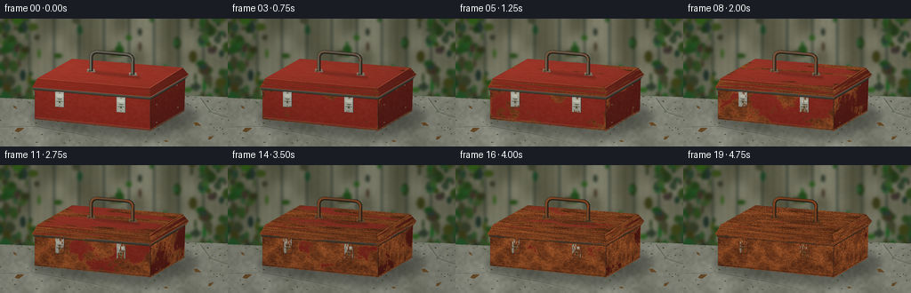
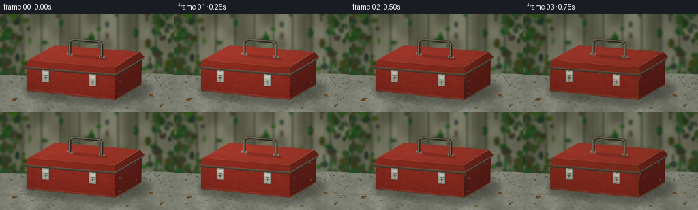
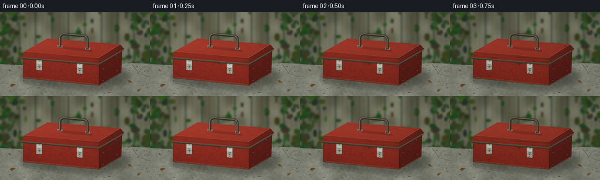
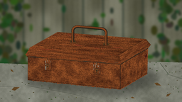
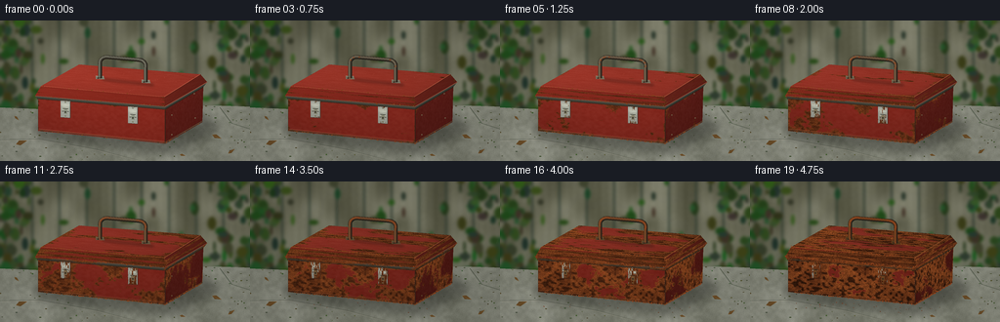

CODING AGENTS AS PIXEL WORLD MODELS
traex/GPT-6.1-Sol · material_0049
点击播放 · 原生 RGB 像素
逐轮保存的候选
回放视频、检查图与代码变化。
每份候选均可单独播放。实际图片检查记录在下方工具轨迹中。
候选 01播放与检查图
点击播放 · 原生 RGB 像素


展开代码变化
--- 上一保存版本
+++ 本次保存版本
@@ -0,0 +1,260 @@
+"""Procedural fixed-camera study of a painted steel toolbox weathering outdoors."""
+from pathlib import Path
+import numpy as np
+from PIL import Image, ImageDraw, ImageFilter
+import artifact_io
+
+ROOT=Path(__file__).resolve().parent
+W,H,S=256,144,4
+WW,HH=W*S,H*S
+rng=np.random.default_rng(7231)
+Y,X=np.mgrid[:HH,:WW].astype(np.float32); X/=S;Y/=S
+
+def noise(w,h,grid,seed):
+ r=np.random.default_rng(seed)
+ a=r.random((max(2,round(h/grid)),max(2,round(w/grid))))
+ im=Image.fromarray(np.uint8(a*255)).resize((w,h),Image.Resampling.BICUBIC)
+ return np.asarray(im).astype(np.float32)/255
+
+def poly_mask(pts):
+ im=Image.new('L',(WW,HH));d=ImageDraw.Draw(im);d.polygon([(x*S,y*S) for x,y in pts],fill=255)
+ return np.array(im)>0
+
+def line(d,pts,fill,width):
+ d.line([(int(x*S),int(y*S)) for x,y in pts],fill=fill,width=max(1,int(width*S)),joint='curve')
+
+def polygon(d,pts,fill):d.polygon([(x*S,y*S) for x,y in pts],fill=fill)
+def ellipse(d,b,fill,outline=None,width=1):d.ellipse(tuple(int(v*S) for v in b),fill=fill,outline=outline,width=max(1,int(width*S)))
+
+# Immutable, softly focused garden fence and foliage.
+bg=np.zeros((HH,WW,3),np.float32)
+bn=noise(WW,HH,72,12);grain=noise(WW,HH,4,19)
+wood=np.array([105,105,86],np.float32)
+bg[:]=wood+(bn[...,None]-.5)*37+(grain[...,None]-.5)*9
+for k in range(-1,11):
+ left=k*28+6
+ plank=(X>=left)&(X<left+27)
+ streak=np.sin(X*.82+k)*3+np.sin(X*2.7+np.sin(Y*.027))*2
+ bg[plank]+=streak[plank,None]+(k%3-1)*5
+ seam=(X>=left+26)&(X<left+28)
+ bg[seam]=np.array([48,59,47])+bn[seam,None]*12
+# darker soil foot of fence
+bg-=np.clip((Y-57)/35,0,1)[...,None]*np.array([14,9,9])
+back=Image.fromarray(np.uint8(np.clip(bg,0,255)));d=ImageDraw.Draw(back)
+# blurred climbing greenery, individual leaf masses
+r=np.random.default_rng(42)
+for i in range(640):
+ xx=r.uniform(-10,267); yy=r.uniform(-12,98)
+ prob=(.8 if xx<32 or xx>224 else .07)+(.35 if yy>62 else 0)
+ if r.random()>prob:continue
+ rx=r.uniform(1,6);ry=r.uniform(2,7)
+ color=(int(r.uniform(28,65)),int(r.uniform(49,93)),int(r.uniform(23,49)))
+ ellipse(d,(xx-rx,yy-ry,xx+rx,yy+ry),color)
+back=back.filter(ImageFilter.GaussianBlur(1.5*S))
+backarr=np.array(back).astype(np.float32)
+# concrete slab foreground
+nlarge=noise(WW,HH,72,132);nmid=noise(WW,HH,13,133);nfine=noise(WW,HH,1.0,134)
+ground=np.array([128,130,117])+(nlarge[...,None]-.5)*38+(nmid[...,None]-.5)*15+(nfine[...,None]-.5)*19
+ground-=np.clip((94-Y)/26,0,1)[...,None]*20
+groundmask=Y>89+2*np.sin(X*.023)
+basearr=np.where(groundmask[...,None],ground,backarr)
+base=Image.fromarray(np.uint8(np.clip(basearr,0,255)));d=ImageDraw.Draw(base)
+# slab joints and little moss clumps
+line(d,[(0,122),(40,121),(99,132),(145,144)],(77,82,71),.65)
+line(d,[(2,123),(40,122),(100,133),(144,144)],(163,159,143),.35)
+line(d,[(225,89),(237,105),(256,111)],(66,75,60),.7)
+for i in range(310):
+ xx=r.uniform(0,256); yy=r.uniform(87,144)
+ if r.random()>.22+(.5 if yy<96 or xx>235 else 0):continue
+ ellipse(d,(xx,yy,xx+r.uniform(.4,2.4),yy+r.uniform(.3,1.0)),(int(r.uniform(55,89)),int(r.uniform(72,95)),int(r.uniform(40,60))))
+# contact and cast shadow, soft and attached
+shadow=Image.new('L',(WW,HH));sd=ImageDraw.Draw(shadow)
+sd.polygon([(34*S,107*S),(65*S,99*S),(205*S,92*S),(227*S,110*S),(178*S,137*S),(41*S,123*S)],fill=105)
+shadow=shadow.filter(ImageFilter.GaussianBlur(4*S))
+basearr=np.array(base).astype(np.float32)*(1-np.array(shadow)[...,None]/255*.65)
+
+class Surface:
+ def __init__(self,pts,paint,seed,metal=False):
+ self.pts=pts;self.paint=np.array(paint);self.metal=metal
+ m=poly_mask(pts);self.iy,self.ix=np.where(m)
+ # inverse projective map to physical face coordinates
+ src=np.array([[0,0],[1,0],[1,1],[0,1]],float)
+ A=[];b=[]
+ for (x,y),(u,v) in zip(pts,src):
+ A.extend([[x,y,1,0,0,0,-u*x,-u*y],[0,0,0,x,y,1,-v*x,-v*y]]);b.extend([u,v])
+ h=np.linalg.solve(np.array(A),b); xx=X[m];yy=Y[m];den=h[6]*xx+h[7]*yy+1
+ self.u=np.clip((h[0]*xx+h[1]*yy+h[2])/den,0,1);self.v=np.clip((h[3]*xx+h[4]*yy+h[5])/den,0,1)
+ tw,th=640,240
+ U,V=np.meshgrid(np.linspace(0,1,tw),np.linspace(0,1,th))
+ ns=[noise(tw,th,g,seed+j) for j,g in enumerate([100,39,14,5,1])]
+ self.fields=[]
+ # sample texture consistently in face space
+ a=np.minimum((self.u*(tw-1)).astype(int),tw-1);bb=np.minimum((self.v*(th-1)).astype(int),th-1)
+ for n in ns:self.fields.append(n[bb,a])
+ n0,n1,n2,n3,n4=ns
+ edge=np.minimum.reduce([U*2.7,(1-U)*2.7,V,(1-V)])
+ # grainy, coherent expanding islands, joined to edges first
+ field=.52*n0+.25*n1+.16*n2+.07*n3
+ onset=.11+field*.88
+ onset-=.21*np.exp(-edge*25)
+ # narrow scratches are early corrosion nuclei
+ rr=np.random.default_rng(seed+101)
+ scratch=Image.new('L',(tw,th));ds=ImageDraw.Draw(scratch)
+ for j in range(45 if not metal else 12):
+ sx=rr.uniform(0,tw);sy=rr.uniform(0,th);le=rr.uniform(4,38)
+ ds.line([(sx,sy),(sx+le,sy+rr.uniform(-4,4))],fill=int(rr.uniform(70,170)),width=1)
+ scratch=np.array(scratch)/255
+ onset-=scratch*.33
+ self.onset=onset[bb,a];self.scratch=scratch[bb,a];self.edge=edge[bb,a]
+ def draw(self,arr,t):
+ n0,n1,n2,n3,n4=self.fields
+ age=t**.88
+ threshold=.19+.64*age if not self.metal else .10+.65*age
+ rust=np.clip((threshold-self.onset)*21,0,1)
+ paint=self.paint[None,:]*(1-.20*t)+(n2[:,None]-.5)*7+(n4[:,None]-.5)*8
+ paint=paint+(self.scratch[:,None])*np.array([26,24,20])*(1-rust[:,None])
+ # mottled hematite, deep pits, and granular orange oxidation
+ tone=.52*n1+.30*n2+.18*n3
+ oxid=np.stack([79+tone*116,36+tone*70,19+tone*31],axis=1)
+ oxid+=(n4[:,None]-.5)*28
+ pits=np.clip((.27-n4)*6,0,1)*(.4+.6*t)
+ oxid*=1-pits[:,None]*.62
+ # dark chipped boundaries with a bright crumbly orange lip
+ lip=np.exp(-((threshold-self.onset-.008)/.023)**2)
+ oxid+=lip[:,None]*np.array([21,8,0])
+ c=paint*(1-rust[:,None])+oxid*rust[:,None]
+ lighting=.96-.09*self.v+.035*np.sin(self.u*3)
+ c*=lighting[:,None]
+ # reflected sky in surviving polished metal
+ if self.metal:c+=(1-rust[:,None])*np.clip(.17-np.abs(self.v[:,None]-.22),0,.17)*105
+ # grime and green damp deposits at lowest seams
+ grime=np.exp(-(1-self.v)*37)*t*(.6+.4*n1)
+ c=c*(1-grime[:,None]*.36)
+ arr[self.iy,self.ix]=np.clip(c,0,255)
+
+# Distinct facets with an asymmetric soft skylight.
+faces=[
+ Surface([(39,80),(169,91),(169,126),(39,113)],(139,43,32),2),
+ Surface([(169,91),(208,68),(207,104),(169,126)],(91,29,23),32),
+ Surface([(42,67),(81,45),(205,55),(168,78)],(165,57,43),62),
+ Surface([(36,77),(42,67),(168,78),(169,88)],(142,44,32),92),
+ Surface([(169,88),(168,78),(205,55),(212,63)],(104,35,26),122),
+ Surface([(36,77),(169,88),(169,91),(38,80)],(75,72,61),152,True),
+ Surface([(169,88),(212,63),(208,68),(169,91)],(64,65,57),182,True),
+]
+# two recognizable clasp plates on the front, mapped in the same perspective
+hardware=[]
+for x,y in [(67,82),(136,88)]:
+ hardware.append(Surface([(x-5,y),(x+5,y+.85),(x+5,y+18),(x-5,y+17.1)],(175,178,166),200+x,True))
+ hardware.append(Surface([(x-3.5,y+3),(x+3.4,y+3.6),(x+3.4,y+11.4),(x-3.5,y+10.8)],(190,193,177),350+x,True))
+
+# Rust speckles on exposed edging and blackened hardware remain fixed in space.
+rr=np.random.default_rng(732)
+edge_particles=[]
+paths=[[(39,113),(169,126)],[(36,77),(169,88)],[(169,126),(207,104)],[(42,67),(168,78)]]
+for pts in paths:
+ for k in range(115):
+ a=rr.random();p=np.array(pts[0])*(1-a)+np.array(pts[1])*a
+ p+=rr.normal(0,.3,2)
+ edge_particles.append((p,rr.random(),rr.uniform(.12,.5)))
+
+def bezier(p0,p1,p2,p3,n=18):
+ t=np.linspace(0,1,n)[:,None]
+ return ((1-t)**3*np.array(p0)+3*(1-t)**2*t*np.array(p1)+3*(1-t)*t*t*np.array(p2)+t**3*np.array(p3)).tolist()
+handle=[(102.5,59),(102.5,45)]
+handle+=bezier((102.5,45),(102,39),(107,36.5),(112,37.5))
+handle+=[(140.5,40)]
+handle+=bezier((140.5,40),(147,40.5),(150,43),(149,49))
+handle+=[(149,63)]
+# fixed leaves, sparse and unobtrusive
+leaves=[(22,125,6,-.3),(222,119,5,.4),(17,100,3,.8),(237,134,4,-.6),(187,138,3,.25)]
+
+frames=[]
+for f in range(20):
+ t=f/19
+ # subtle accelerated weather, not camera movement
+ wet=(.5+.5*np.sin(f*1.95+.2))*.35
+ arr=basearr.copy()
+ # recurring rain-darkened concrete mottling
+ wetmask=np.clip((nlarge-.48)*3,0,.5)*groundmask
+ arr*=1-wetmask[...,None]*wet*.27
+ for face in faces:face.draw(arr,t)
+ im=Image.fromarray(np.uint8(np.clip(arr,0,255)));d=ImageDraw.Draw(im)
+ # rolled seams / lid rim and faint manufactured panel edges
+ edgecol=tuple(np.array([91,72,52])*(1-t)+np.array([69,38,22])*t)
+ edgecol=tuple(int(c) for c in edgecol)
+ line(d,[(38,80),(169,91),(208,68)],(43,37,28),.75)
+ line(d,[(40,112),(169,125),(207,103)],edgecol,.9)
+ line(d,[(40,111),(169,124)],tuple(int(c) for c in np.array([184,101,74])*(1-t)+np.array([136,73,38])*t),.35)
+ line(d,[(39,81),(39,112)],(75,40,27),.45)
+ line(d,[(169,92),(169,124)],(54,34,25),.8)
+ line(d,[(42,67),(168,78),(205,55)],tuple(int(c) for c in np.array([195,98,72])*(1-t)+np.array([151,85,46])*t),.55)
+ line(d,[(36,77),(169,88),(212,63)],tuple(int(c) for c in np.array([177,97,72])*(1-t)+np.array([120,65,36])*t),.5)
+ for p,a,size in edge_particles:
+ if a<t*.92+.08:
+ x,y=p;ellipse(d,(x-size,y-size,x+size,y+size),(130+int(a*20),65,28))
+ # lid handle casts a shadow on its top face
+ shade=Image.new('RGBA',(WW,HH));sh=ImageDraw.Draw(shade)
+ line(sh,[(105,60),(113,61),(149,65),(157,66)],(35,21,15,78),3.2)
+ shade=shade.filter(ImageFilter.GaussianBlur(1.25*S));im=Image.alpha_composite(im.convert('RGBA'),shade).convert('RGB');d=ImageDraw.Draw(im)
+ # Mounting brackets on the lid, with rounded, raised edges
+ for x,y in [(102,59),(149,63)]:
+ polygon(d,[(x-4,y-2.3),(x+4,y-1.8),(x+5,y+1.3),(x-3.8,y+.8)],(int(129-49*t),int(127-73*t),int(112-85*t)))
+ line(d,[(x-4,y-2.3),(x+4,y-1.8)],(int(203-74*t),int(200-112*t),int(174-133*t)),.5)
+ ellipse(d,(x-2.5,y-.5,x-1.1,y+.7),(52,45,32))
+ # Rounded steel carry loop, light on left, deep recess on the inner edge
+ line(d,handle,(37,32,25),4.0)
+ line(d,[(x-.35,y-.4) for x,y in handle],(int(86+24*t),int(84-27*t),int(73-46*t)),2.6)
+ line(d,[(x-.8,y-.6) for x,y in handle],(int(147-22*t),int(145-64*t),int(124-84*t)),.55)
+ for j,(x,y) in enumerate(handle):
+ if ((j*31)%53)/53<t*.83:
+ ellipse(d,(x-.8,y-.5,x+.6,y+.4),(137,68,31))
+ # render face clasps on top of body shading
+ ar=np.array(im).astype(np.float32)
+ for h in hardware:h.draw(ar,t)
+ im=Image.fromarray(np.uint8(ar));d=ImageDraw.Draw(im)
+ for x,y in [(67,82),(136,88)]:
+ dark=(int(56+15*t),int(56-18*t),int(49-26*t))
+ line(d,[(x-4.5,y+17),(x+5,y+17.8),(x+5,y+1)],dark,.5)
+ line(d,[(x-3.5,y+3),(x+3.4,y+3.6)],(int(223-66*t),int(223-128*t),int(202-155*t)),.65)
+ line(d,[(x-3.5,y+10.8),(x+3.4,y+11.4)],dark,.85)
+ # latch slot and folded locking tongue
+ line(d,[(x-2.5,y+8),(x+2.5,y+8.5)],(43,42,33),.85)
+ polygon(d,[(x-1.4,y+9),(x+1.5,y+9.2),(x+1.5,y+14.0),(x-1.4,y+13.7)],(int(138-35*t),int(144-78*t),int(125-92*t)))
+ ellipse(d,(x-.7,y+11,x+.6,y+12.5),(38,34,26))
+ for yy in [y+1.6,y+15.7]:
+ ellipse(d,(x-.85,yy-.6,x+.85,yy+.8),(int(145-36*t),int(145-78*t),int(124-91*t)))
+ line(d,[(x-.55,yy+.2),(x+.5,yy+.3)],(50,46,35),.3)
+ # small side rivets
+ for xx,yy in [(199,75),(200,100),(176,97),(176,117)]:
+ ellipse(d,(xx-.6,yy-.7,xx+.7,yy+.6),(int(139-39*t),int(132-69*t),int(102-66*t)))
+ ellipse(d,(xx-.2,yy-.2,xx+.35,yy+.3),(47,34,25))
+ # a few rain rivulets on painted front: permanent vertical oxide staining
+ if t>.3:
+ layer=Image.new('RGBA',(WW,HH));ld=ImageDraw.Draw(layer)
+ for xx,yy,l in [(61,96,11),(72,102,10),(137,108,11),(146,98,19),(98,91,22)]:
+ line(ld,[(xx,yy),(xx+.3,yy+l)],(74,39,16,int((t-.3)*72)),.6)
+ im=Image.alpha_composite(im.convert('RGBA'),layer).convert('RGB');d=ImageDraw.Draw(im)
+ # damp autumn leaves are secondary to the toolbox
+ for xx,yy,size,theta in leaves:
+ p=np.array([[-size,0],[-size*.3,-size*.4],[size,0],[-size*.3,size*.4]])
+ rot=np.array([[np.cos(theta),-np.sin(theta)],[np.sin(theta),np.cos(theta)]])
+ pts=p@rot.T+np.array([xx,yy])
+ polygon(d,pts.tolist(),(98,70,36));line(d,[(xx-size*np.cos(theta),yy-size*np.sin(theta)),(xx+size*np.cos(theta),yy+size*np.sin(theta))],(143,103,52),.25)
+ # Humidity and occasional thin rain, subdued and confined to a few timelapse beats
+ if f in [4,9,14,18]:
+ rain=Image.new('RGBA',(WW,HH));rd=ImageDraw.Draw(rain);rg=np.random.default_rng(540+f)
+ for j in range(40):
+ xx=rg.uniform(0,256);yy=rg.uniform(0,140)
+ line(rd,[(xx,yy),(xx-1.0,yy+rg.uniform(3,8))],(188,205,206,rg.integers(10,27).item()),.32)
+ im=Image.alpha_composite(im.convert('RGBA'),rain).convert('RGB')
+ ar=np.array(im).astype(np.float32)
+ # Overcast exposure changes stay small to preserve temporal readability.
+ illum=1+.027*np.sin(f*1.7)-.025*t
+ ar*=illum
+ vign=1-.075*((X-128)**2/(160**2)+(Y-76)**2/(125**2))
+ ar*=vign[...,None]
+ im=Image.fromarray(np.uint8(np.clip(ar,0,255))).resize((W,H),Image.Resampling.LANCZOS)
+ frames.append(np.array(im))
+artifact_io.save(np.stack(frames),ROOT)
+print('Saved 20 RGB frames, 256x144, 4 fps.')
候选 02播放与检查图
点击播放 · 原生 RGB 像素


展开代码变化
--- 上一保存版本
+++ 本次保存版本
@@ -109,14 +109,17 @@
def draw(self,arr,t):
n0,n1,n2,n3,n4=self.fields
age=t**.88
- threshold=.19+.64*age if not self.metal else .10+.65*age
+ threshold=.19+.50*age if not self.metal else .10+.65*age
rust=np.clip((threshold-self.onset)*21,0,1)
paint=self.paint[None,:]*(1-.20*t)+(n2[:,None]-.5)*7+(n4[:,None]-.5)*8
paint=paint+(self.scratch[:,None])*np.array([26,24,20])*(1-rust[:,None])
# mottled hematite, deep pits, and granular orange oxidation
- tone=.52*n1+.30*n2+.18*n3
- oxid=np.stack([79+tone*116,36+tone*70,19+tone*31],axis=1)
- oxid+=(n4[:,None]-.5)*28
+ tone=.30*n0+.27*n1+.28*n2+.15*n3
+ oxid=np.stack([57+tone*153,24+tone*86,12+tone*36],axis=1)
+ oxid+=(n4[:,None]-.5)*21
+ # Small, irregular scaled patches create dark relief as the rust thickens.
+ scales=np.clip((.36-n2)*8,0,1)*t*t
+ oxid*=1-scales[:,None]*.46
pits=np.clip((.27-n4)*6,0,1)*(.4+.6*t)
oxid*=1-pits[:,None]*.62
# dark chipped boundaries with a bright crumbly orange lip
@@ -229,6 +232,22 @@
for xx,yy in [(199,75),(200,100),(176,97),(176,117)]:
ellipse(d,(xx-.6,yy-.7,xx+.7,yy+.6),(int(139-39*t),int(132-69*t),int(102-66*t)))
ellipse(d,(xx-.2,yy-.2,xx+.35,yy+.3),(47,34,25))
+ # Crevices open at the vulnerable rolled base seam in the last years.
+ if t>.62:
+ age=(t-.62)/.38
+ for xx,yy,scale in [(51,112,1.1),(92,116.7,.8),(154,122.9,1.4),(192,111,1.0)]:
+ size=scale*age
+ pts=[(xx-size*2,yy),(xx-size,yy-size*.65),(xx-size*.2,yy-size*.25),(xx+size*.35,yy-size*.7),(xx+size*1.8,yy),(xx+size,yy+size*.4),(xx-size*.4,yy+size*.25)]
+ line(d,pts+[pts[0]],(139,68,28),.55)
+ polygon(d,pts,(34,28,20))
+ # A scattering of small rust flakes directly below the box.
+ rg=np.random.default_rng(281)
+ for j in range(31):
+ if rg.random()>age:continue
+ xx=rg.uniform(44,199);yy=rg.uniform(129,135)
+ if xx<130:yy-=5
+ size=rg.uniform(.2,.65)
+ polygon(d,[(xx-size,yy),(xx,yy-size*.7),(xx+size,yy+.15),(xx+.2,yy+size*.4)],(rg.integers(76,126).item(),48,23))
# a few rain rivulets on painted front: permanent vertical oxide staining
if t>.3:
layer=Image.new('RGBA',(WW,HH));ld=ImageDraw.Draw(layer)
可观测工具轨迹
实际执行的命令与返回图片。
命令 1exit 0
/bin/bash -lc "ls -la && cat prompt.txt && printf '\\n---RULES---\\n' && cat GENERATION_RULES.md && printf '\\n---SPEC---\\n' && cat task_spec.json"
命令 2exit 0
/bin/bash -lc 'cat artifact_io.py'
命令 3exit 0
/bin/bash -lc "python - <<'PY'
import numpy,PIL
try:
import scipy;print('scipy',scipy.__version__)
except:pass
PY"命令 4exit 0
/bin/bash -lc "cat > generate.py <<'PY'
\"\"\"Procedural fixed-camera study of a painted steel toolbox weathering outdoors.\"\"\"
from pathlib import Path
import numpy as np
from PIL import Image, ImageDraw, ImageFilter
import artifact_io
ROOT=Path(__file__).resolve().parent
W,H,S=256,144,4
WW,HH=W*S,H*S
rng=np.random.default_rng(7231)
Y,X=np.mgrid[:HH,:WW].astype(np.float32); X/=S;Y/=S
def noise(w,h,grid,seed):
r=np.random.default_rng(seed)
a=r.random((max(2,round(h/grid)),max(2,round(w/grid))))
im=Image.fromarray(np.uint8(a*255)).resize((w,h),Image.Resampling.BICUBIC)
return np.asarray(im).astype(np.float32)/255
def poly_mask(pts):
im=Image.new('L',(WW,HH));d=ImageDraw.Draw(im);d.polygon([(x*S,y*S) for x,y in pts],fill=255)
return np.array(im)>0
def line(d,pts,fill,width):
d.line([(int(x*S),int(y*S)) for x,y in pts],fill=fill,width=max(1,int(width*S)),joint='curve')
def polygon(d,pts,fill):d.polygon([(x*S,y*S) for x,y in pts],fill=fill)
def ellipse(d,b,fill,outline=None,width=1):d.ellipse(tuple(int(v*S) for v in b),fill=fill,outline=outline,width=max(1,int(width*S)))
# Immutable, softly focused garden fence and foliage.
bg=np.zeros((HH,WW,3),np.float32)
bn=noise(WW,HH,72,12);grain=noise(WW,HH,4,19)
wood=np.array([105,105,86],np.float32)
bg[:]=wood+(bn[...,None]-.5)*37+(grain[...,None]-.5)*9
for k in range(-1,11):
left=k*28+6
plank=(X>=left)&(X<left+27)
streak=np.sin(X*.82+k)*3+np.sin(X*2.7+np.sin(Y*.027))*2
bg[plank]+=streak[plank,None]+(k%3-1)*5
seam=(X>=left+26)&(X<left+28)
bg[seam]=np.array([48,59,47])+bn[seam,None]*12
# darker soil foot of fence
bg-=np.clip((Y-57)/35,0,1)[...,None]*np.array([14,9,9])
back=Image.fromarray(np.uint8(np.clip(bg,0,255)));d=ImageDraw.Draw(back)
# blurred climbing greenery, individual leaf masses
r=np.random.default_rng(42)
for i in range(640):
xx=r.uniform(-10,267); yy=r.uniform(-12,98)
prob=(.8 if xx<32 or xx>224 else .07)+(.35 if yy>62 else 0)
if r.random()>prob:continue
rx=r.uniform(1,6);ry=r.uniform(2,7)
color=(int(r.uniform(28,65)),int(r.uniform(49,93)),int(r.uniform(23,49)))
ellipse(d,(xx-rx,yy-ry,xx+rx,yy+ry),color)
back=back.filter(ImageFilter.GaussianBlur(1.5*S))
backarr=np.array(back).astype(np.float32)
# concrete slab foreground
nlarge=noise(WW,HH,72,132);nmid=noise(WW,HH,13,133);nfine=noise(WW,HH,1.0,134)
ground=np.array([128,130,117])+(nlarge[...,None]-.5)*38+(nmid[...,None]-.5)*15+(nfine[...,None]-.5)*19
ground-=np.clip((94-Y)/26,0,1)[...,None]*20
groundmask=Y>89+2*np.sin(X*.023)
basearr=np.where(groundmask[...,None],ground,backarr)
base=Image.fromarray(np.uint8(np.clip(basearr,0,255)));d=ImageDraw.Draw(base)
# slab joints and little moss clumps
line(d,[(0,122),(40,121),(99,132),(145,144)],(77,82,71),.65)
line(d,[(2,123),(40,122),(100,133),(144,144)],(163,159,143),.35)
line(d,[(225,89),(237,105),(256,111)],(66,75,60),.7)
for i in range(310):
xx=r.uniform(0,256); yy=r.uniform(87,144)
if r.random()>.22+(.5 if yy<96 or xx>235 else 0):continue
ellipse(d,(xx,yy,xx+r.uniform(.4,2.4),yy+r.uniform(.3,1.0)),(int(r.uniform(55,89)),int(r.uniform(72,95)),int(r.uniform(40,60))))
# contact and cast shadow, soft and attached
shadow=Image.new('L',(WW,HH));sd=ImageDraw.Draw(shadow)
sd.polygon([(34*S,107*S),(65*S,99*S),(205*S,92*S),(227*S,110*S),(178*S,137*S),(41*S,123*S)],fill=105)
shadow=shadow.filter(ImageFilter.GaussianBlur(4*S))
basearr=np.array(base).astype(np.float32)*(1-np.array(shadow)[...,None]/255*.65)
class Surface:
def __init__(self,pts,paint,seed,metal=False):
self.pts=pts;self.paint=np.array(paint);self.metal=metal
m=poly_mask(pts);self.iy,self.ix=np.where(m)
# inverse projective map to physical face coordinates
src=np.array([[0,0],[1,0],[1,1],[0,1]],float)
A=[];b=[]
for (x,y),(u,v) in zip(pts,src):
A.extend([[x,y,1,0,0,0,-u*x,-u*y],[0,0,0,x,y,1,-v*x,-v*y]]);b.extend([u,v])
h=np.linalg.solve(np.array(A),b); xx=X[m];yy=Y[m];den=h[6]*xx+h[7]*yy+1
self.u=np.clip((h[0]*xx+h[1]*yy+h[2])/den,0,1);self.v=np.clip((h[3]*xx+h[4]*yy+h[5])/den,0,1)
tw,th=640,240
U,V=np.meshgrid(np.linspace(0,1,tw),np.linspace(0,1,th))
ns=[noise(tw,th,g,seed+j) for j,g in enumerate([100,39,14,5,1])]
self.fields=[]
# sample texture consistently in face space
a=np.minimum((self.u*(tw-1)).astype(int),tw-1);bb=np.minimum((self.v*(th-1)).astype(int),th-1)
for n in ns:self.fields.append(n[bb,a])
n0,n1,n2,n3,n4=ns
edge=np.minimum.reduce([U*2.7,(1-U)*2.7,V,(1-V)])
# grainy, coherent expanding islands, joined to edges first
field=.52*n0+.25*n1+.16*n2+.07*n3
onset=.11+field*.88
onset-=.21*np.exp(-edge*25)
# narrow scratches are early corrosion nuclei
rr=np.random.default_rng(seed+101)
scratch=Image.new('L',(tw,th));ds=ImageDraw.Draw(scratch)
for j in range(45 if not metal else 12):
sx=rr.uniform(0,tw);sy=rr.uniform(0,th);le=rr.uniform(4,38)
ds.line([(sx,sy),(sx+le,sy+rr.uniform(-4,4))],fill=int(rr.uniform(70,170)),width=1)
scratch=np.array(scratch)/255
onset-=scratch*.33
self.onset=onset[bb,a];self.scratch=scratch[bb,a];self.edge=edge[bb,a]
def draw(self,arr,t):
n0,n1,n2,n3,n4=self.fields
age=t**.88
threshold=.19+.64*age if not self.metal else .10+.65*age
rust=np.clip((threshold-self.onset)*21,0,1)
paint=self.paint[None,:]*(1-.20*t)+(n2[:,None]-.5)*7+(n4[:,None]-.5)*8
paint=paint+(self.scratch[:,None])*np.array([26,24,20])*(1-rust[:,None])
# mottled hematite, deep pits, and granular orange oxidation
tone=.52*n1+.30*n2+.18*n3
oxid=np.stack([79+tone*116,36+tone*70,19+tone*31],axis=1)
oxid+=(n4[:,None]-.5)*28
pits=np.clip((.27-n4)*6,0,1)*(.4+.6*t)
oxid*=1-pits[:,None]*.62
# dark chipped boundaries with a bright crumbly orange lip
lip=np.exp(-((threshold-self.onset-.008)/.023)**2)
oxid+=lip[:,None]*np.array([21,8,0])
c=paint*(1-rust[:,None])+oxid*rust[:,None]
lighting=.96-.09*self.v+.035*np.sin(self.u*3)
c*=lighting[:,None]
# reflected sky in surviving polished metal
if self.metal:c+=(1-rust[:,None])*np.clip(.17-np.abs(self.v[:,None]-.22),0,.17)*105
# grime and green damp deposits at lowest seams
grime=np.exp(-(1-self.v)*37)*t*(.6+.4*n1)
c=c*(1-grime[:,None]*.36)
arr[self.iy,self.ix]=np.clip(c,0,255)
# Distinct facets with an asymmetric soft skylight.
faces=[
Surface([(39,80),(169,91),(169,126),(39,113)],(139,43,32),2),
Surface([(169,91),(208,68),(207,104),(169,126)],(91,29,23),32),
Surface([(42,67),(81,45),(205,55),(168,78)],(165,57,43),62),
Surface([(36,77),(42,67),(168,78),(169,88)],(142,44,32),92),
Surface([(169,88),(168,78),(205,55),(212,63)],(104,35,26),122),
Surface([(36,77),(169,88),(169,91),(38,80)],(75,72,61),152,True),
Surface([(169,88),(212,63),(208,68),(169,91)],(64,65,57),182,True),
]
# two recognizable clasp plates on the front, mapped in the same perspective
hardware=[]
for x,y in [(67,82),(136,88)]:
hardware.append(Surface([(x-5,y),(x+5,y+.85),(x+5,y+18),(x-5,y+17.1)],(175,178,166),200+x,True))
hardware.append(Surface([(x-3.5,y+3),(x+3.4,y+3.6),(x+3.4,y+11.4),(x-3.5,y+10.8)],(190,193,177),350+x,True))
# Rust speckles on exposed edging and blackened hardware remain fixed in space.
rr=np.random.default_rng(732)
edge_particles=[]
paths=[[(39,113),(169,126)],[(36,77),(169,88)],[(169,126),(207,104)],[(42,67),(168,78)]]
for pts in paths:
for k in range(115):
a=rr.random();p=np.array(pts[0])*(1-a)+np.array(pts[1])*a
p+=rr.normal(0,.3,2)
edge_particles.append((p,rr.random(),rr.uniform(.12,.5)))
def bezier(p0,p1,p2,p3,n=18):
t=np.linspace(0,1,n)[:,None]
return ((1-t)**3*np.array(p0)+3*(1-t)**2*t*np.array(p1)+3*(1-t)*t*t*np.array(p2)+t**3*np.array(p3)).tolist()
handle=[(102.5,59),(102.5,45)]
handle+=bezier((102.5,45),(102,39),(107,36.5),(112,37.5))
handle+=[(140.5,40)]
handle+=bezier((140.5,40),(147,40.5),(150,43),(149,49))
handle+=[(149,63)]
# fixed leaves, sparse and unobtrusive
leaves=[(22,125,6,-.3),(222,119,5,.4),(17,100,3,.8),(237,134,4,-.6),(187,138,3,.25)]
frames=[]
for f in range(20):
t=f/19
# subtle accelerated weather, not camera movement
wet=(.5+.5*np.sin(f*1.95+.2))*.35
arr=basearr.copy()
# recurring rain-darkened concrete mottling
wetmask=np.clip((nlarge-.48)*3,0,.5)*groundmask
arr*=1-wetmask[...,None]*wet*.27
for face in faces:face.draw(arr,t)
im=Image.fromarray(np.uint8(np.clip(arr,0,255)));d=ImageDraw.Draw(im)
# rolled seams / lid rim and faint manufactured panel edges
edgecol=tuple(np.array([91,72,52])*(1-t)+np.array([69,38,22])*t)
edgecol=tuple(int(c) for c in edgecol)
line(d,[(38,80),(169,91),(208,68)],(43,37,28),.75)
line(d,[(40,112),(169,125),(207,103)],edgecol,.9)
line(d,[(40,111),(169,124)],tuple(int(c) for c in np.array([184,101,74])*(1-t)+np.array([136,73,38])*t),.35)
line(d,[(39,81),(39,112)],(75,40,27),.45)
line(d,[(169,92),(169,124)],(54,34,25),.8)
line(d,[(42,67),(168,78),(205,55)],tuple(int(c) for c in np.array([195,98,72])*(1-t)+np.array([151,85,46])*t),.55)
line(d,[(36,77),(169,88),(212,63)],tuple(int(c) for c in np.array([177,97,72])*(1-t)+np.array([120,65,36])*t),.5)
for p,a,size in edge_particles:
if a<t*.92+.08:
x,y=p;ellipse(d,(x-size,y-size,x+size,y+size),(130+int(a*20),65,28))
# lid handle casts a shadow on its top face
shade=Image.new('RGBA',(WW,HH));sh=ImageDraw.Draw(shade)
line(sh,[(105,60),(113,61),(149,65),(157,66)],(35,21,15,78),3.2)
shade=shade.filter(ImageFilter.GaussianBlur(1.25*S));im=Image.alpha_composite(im.convert('RGBA'),shade).convert('RGB');d=ImageDraw.Draw(im)
# Mounting brackets on the lid, with rounded, raised edges
for x,y in [(102,59),(149,63)]:
polygon(d,[(x-4,y-2.3),(x+4,y-1.8),(x+5,y+1.3),(x-3.8,y+.8)],(int(129-49*t),int(127-73*t),int(112-85*t)))
line(d,[(x-4,y-2.3),(x+4,y-1.8)],(int(203-74*t),int(200-112*t),int(174-133*t)),.5)
ellipse(d,(x-2.5,y-.5,x-1.1,y+.7),(52,45,32))
# Rounded steel carry loop, light on left, deep recess on the inner edge
line(d,handle,(37,32,25),4.0)
line(d,[(x-.35,y-.4) for x,y in handle],(int(86+24*t),int(84-27*t),int(73-46*t)),2.6)
line(d,[(x-.8,y-.6) for x,y in handle],(int(147-22*t),int(145-64*t),int(124-84*t)),.55)
for j,(x,y) in enumerate(handle):
if ((j*31)%53)/53<t*.83:
ellipse(d,(x-.8,y-.5,x+.6,y+.4),(137,68,31))
# render face clasps on top of body shading
ar=np.array(im).astype(np.float32)
for h in hardware:h.draw(ar,t)
im=Image.fromarray(np.uint8(ar));d=ImageDraw.Draw(im)
for x,y in [(67,82),(136,88)]:
dark=(int(56+15*t),int(56-18*t),int(49-26*t))
line(d,[(x-4.5,y+17),(x+5,y+17.8),(x+5,y+1)],dark,.5)
line(d,[(x-3.5,y+3),(x+3.4,y+3.6)],(int(223-66*t),int(223-128*t),int(202-155*t)),.65)
line(d,[(x-3.5,y+10.8),(x+3.4,y+11.4)],dark,.85)
# latch slot and folded locking tongue
line(d,[(x-2.5,y+8),(x+2.5,y+8.5)],(43,42,33),.85)
polygon(d,[(x-1.4,y+9),(x+1.5,y+9.2),(x+1.5,y+14.0),(x-1.4,y+13.7)],(int(138-35*t),int(144-78*t),int(125-92*t)))
ellipse(d,(x-.7,y+11,x+.6,y+12.5),(38,34,26))
for yy in [y+1.6,y+15.7]:
ellipse(d,(x-.85,yy-.6,x+.85,yy+.8),(int(145-36*t),int(145-78*t),int(124-91*t)))
line(d,[(x-.55,yy+.2),(x+.5,yy+.3)],(50,46,35),.3)
# small side rivets
for xx,yy in [(199,75),(200,100),(176,97),(176,117)]:
ellipse(d,(xx-.6,yy-.7,xx+.7,yy+.6),(int(139-39*t),int(132-69*t),int(102-66*t)))
ellipse(d,(xx-.2,yy-.2,xx+.35,yy+.3),(47,34,25))
# a few rain rivulets on painted front: permanent vertical oxide staining
if t>.3:
layer=Image.new('RGBA',(WW,HH));ld=ImageDraw.Draw(layer)
for xx,yy,l in [(61,96,11),(72,102,10),(137,108,11),(146,98,19),(98,91,22)]:
line(ld,[(xx,yy),(xx+.3,yy+l)],(74,39,16,int((t-.3)*72)),.6)
im=Image.alpha_composite(im.convert('RGBA'),layer).convert('RGB');d=ImageDraw.Draw(im)
# damp autumn leaves are secondary to the toolbox
for xx,yy,size,theta in leaves:
p=np.array([[-size,0],[-size*.3,-size*.4],[size,0],[-size*.3,size*.4]])
rot=np.array([[np.cos(theta),-np.sin(theta)],[np.sin(theta),np.cos(theta)]])
pts=p@rot.T+np.array([xx,yy])
polygon(d,pts.tolist(),(98,70,36));line(d,[(xx-size*np.cos(theta),yy-size*np.sin(theta)),(xx+size*np.cos(theta),yy+size*np.sin(theta))],(143,103,52),.25)
# Humidity and occasional thin rain, subdued and confined to a few timelapse beats
if f in [4,9,14,18]:
rain=Image.new('RGBA',(WW,HH));rd=ImageDraw.Draw(rain);rg=np.random.default_rng(540+f)
for j in range(40):
xx=rg.uniform(0,256);yy=rg.uniform(0,140)
line(rd,[(xx,yy),(xx-1.0,yy+rg.uniform(3,8))],(188,205,206,rg.integers(10,27).item()),.32)
im=Image.alpha_composite(im.convert('RGBA'),rain).convert('RGB')
ar=np.array(im).astype(np.float32)
# Overcast exposure changes stay small to preserve temporal readability.
illum=1+.027*np.sin(f*1.7)-.025*t
ar*=illum
vign=1-.075*((X-128)**2/(160**2)+(Y-76)**2/(125**2))
ar*=vign[...,None]
im=Image.fromarray(np.uint8(np.clip(ar,0,255))).resize((W,H),Image.Resampling.LANCZOS)
frames.append(np.array(im))
artifact_io.save(np.stack(frames),ROOT)
print('Saved 20 RGB frames, 256x144, 4 fps.')
PY
python generate.py"命令 5exit 0
/bin/bash -lc "python - <<'PY'
p='generate.py'
s=open(p).read().replace(\"threshold=.19+.64*age if not self.metal else .10+.65*age\",\"threshold=.19+.50*age if not self.metal else .10+.65*age\")
s=s.replace(\"tone=.52*n1+.30*n2+.18*n3\\n oxid=np.stack([79+tone*116,36+tone*70,19+tone*31],axis=1)\\n oxid+=(n4[:,None]-.5)*28\", \"tone=.30*n0+.27*n1+.28*n2+.15*n3\\n oxid=np.stack([57+tone*153,24+tone*86,12+tone*36],axis=1)\\n oxid+=(n4[:,None]-.5)*21\\n # Small, irregular scaled patches create dark relief as the rust thickens.\\n scales=np.clip((.36-n2)*8,0,1)*t*t\\n oxid*=1-scales[:,None]*.46\")
s=s.replace(\"# a few rain rivulets on painted front: permanent vertical oxide staining\", \"\"\"# Crevices open at the vulnerable rolled base seam in the last years.
if t>.62:
age=(t-.62)/.38
for xx,yy,scale in [(51,112,1.1),(92,116.7,.8),(154,122.9,1.4),(192,111,1.0)]:
size=scale*age
pts=[(xx-size*2,yy),(xx-size,yy-size*.65),(xx-size*.2,yy-size*.25),(xx+size*.35,yy-size*.7),(xx+size*1.8,yy),(xx+size,yy+size*.4),(xx-size*.4,yy+size*.25)]
line(d,pts+[pts[0]],(139,68,28),.55)
polygon(d,pts,(34,28,20))
# A scattering of small rust flakes directly below the box.
rg=np.random.default_rng(281)
for j in range(31):
if rg.random()>age:continue
xx=rg.uniform(44,199);yy=rg.uniform(129,135)
if xx<130:yy-=5
size=rg.uniform(.2,.65)
polygon(d,[(xx-size,yy),(xx,yy-size*.7),(xx+size,yy+.15),(xx+.2,yy+size*.4)],(rg.integers(76,126).item(),48,23))
# a few rain rivulets on painted front: permanent vertical oxide staining\"\"\")
open(p,'w').write(s)
PY
python generate.py"命令 6exit 0
/bin/bash -lc "python - <<'PY'
from pathlib import Path
import numpy as np
from PIL import Image
p=np.load('pixels.npz')['pixels']
assert p.shape==(144,256,20)
assert len(list(Path('frames').glob('*.png')))==20
assert all(Image.open(f'frames/{i:02d}.png').mode=='RGB' for i in range(20))
for x in ['generate.py','pixels.npz','index.html','inspection.png','transition_check.png']:
print(x,Path(x).stat().st_size)
PY"视觉工具实际返回图片 1

视觉工具实际返回图片 2

视觉工具实际返回图片 3

保存候选 2 份；完成命令 6 次；可验证图片返回 3 张。原始 API 响应与完整日志保留在本地。